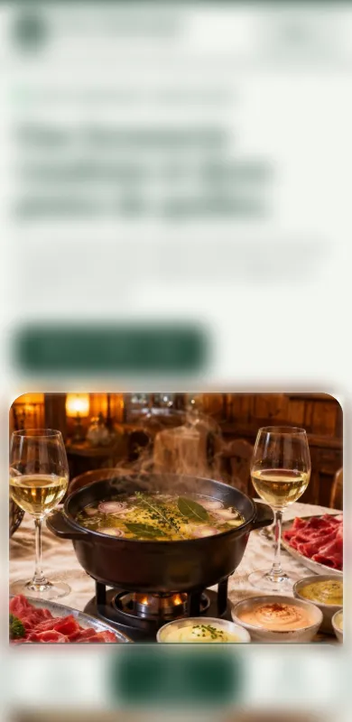

Concept · maquette non commandée
Brasserie vaudoise et quilles · Vevey
Le statut « ouvert maintenant » s'affiche en direct, et la table se réserve en même temps que la piste de quilles.
Automatisation démontréeRéservation combinée table + piste